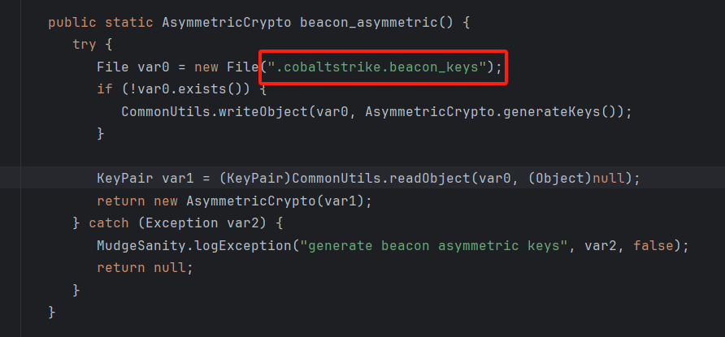
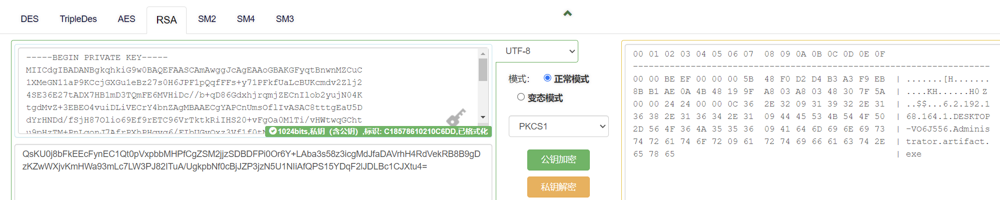

[蓝队技术]CS上线流量分析和伪装上线
CS上线流量分析和伪装上线
CS流量分析
通过CS上线，抓包并筛选HTTP流量
定位到上线的包，里面包含cookie，cookie即为加密字段
分析逆向后的CobaltStrike源码，定位到BeaconHTTP类中的Beacon Entry
继续跟进到C2Beacon类，BeaconEntry入口点在此处进行定义
继续跟进AsymmetricCrypto方法后进入AsymmetricCrypto类，其中是一个明显的RSA加密，模式未ECB，填充方式为PKCS1
继续往下跟到decrypt方法，RSA的解密需要调用私钥
回到BeaconC2类，其中对asecurity变量的赋值只有再setCrypto方法中存在
使用IDEA全局搜索功能定位调用的文件，出现在BeaconSetup类中
继续跟传入的参var2，var2的值来自beacon_asymmetric()方法，这个方法在同个类中定义，这其中的关键就是.cobaltstrike.beacon_keys

这个文件在cs运行目录下也能找到，是beacon的key文件，通常情况下通过一些工具就可以解析公钥，比如GitHub上的CobaltStrikeParser能解析默认配置下的stage信息
要取得私钥需要通过一些方法，根据上面的代码，编写一个工具类用于提取私钥，这个代码很多人都写过，直接拿大佬写完的也行
import java.io.File;
import java.util.Base64;
import common.CommonUtils;
import java.security.KeyPair;
class DumpKeys
{
public static void main(String[] args)
{
try {
File file = new File(".cobaltstrike.beacon_keys");
if (file.exists()) {
KeyPair keyPair = (KeyPair)CommonUtils.readObject(file, null);
System.out.printf("Private Key: %s\n\n", new String(Base64.getEncoder().encode(keyPair.getPrivate().getEncoded())));
System.out.printf("Public Key: %s\n\n", new String(Base64.getEncoder().encode(keyPair.getPublic().getEncoded())));
}
else {
System.out.println("Could not find .cobaltstrike.beacon_keys file");
}
}
catch (Exception exception) {
System.out.println("Could not read asymmetric keys");
}
}
}
使用此代码读取beacon_keys即可进行解密，运行前需设置classpath为cs的jar包文件
找个在线工具，将相关字段填入可以直接解密

因为前面还有一串不可读字符，因此手动分析再进一步，先将私钥转换为16进制，以3082开头的即为私钥
通过工具解析，解密得到的内容如下，似乎看起来丢了一些字符，从DESKTOP变成了SKTOP
所以直接将16进制字符串进行解析
因此最终的metadata格式为：标志头（4）+Size（4）+Rawkey(16)+字体（4）+beacon ID(4)+ 进程ID（4）+port(2)+内核（4）+0x09 +失陷IP +0x09 + 主机名+ 0x09 + 用户名+0x09+进程名
伪装上线
因此只需要知道了公钥和linster地址就能实现伪造上线，照上面的格式构造包就行，中间还有个小坑，就是长度的问题，如果超过特定长度会报错，按此格式生成数据包即可实现批量虚假上线
长度问题的补充
最后补充一下长度问题，为什么会存在长度过长无法伪造上线呢，上面的分析已经提到了CS使用的是RSA算法，加密模式为ECB，填充方式为PKCS1
RSA公钥密码体系是建立在大整数分解难题的基础上的，RSA密码体系的步骤如下：
-
先生成两个大素数p和q，计算n=n=p·q
-
计算φ(N)=(p-1)*(q-1)
-
选择一个整数e，1<e<φ(N)，且e与φ(N)互质
-
计算d，使得e*d=1 mod φ(N)
-
将N和e作为公钥，N和d作为私钥
-
加密数据时，将明文转换为整数M，计算C=Me mod N
-
解密数据时，将密文转换为整数C，计算M=Cd mod N
在RSA算法中，公钥（N，e）用于加密数据，私钥（N，d）用于解密数据。由于φ(N)难以计算，因此在已知N和e的情况下，计算d是困难的，这就保证了RSA算法的安全性。同时，由于N是两个大素数p和q的乘积，因此破解RSA算法的关键在于分解N为p和q两个素数的乘积，这是一个极其困难的问题，因此RSA算法被认为是一种安全的加密算法。
ECB的加密模式也很好理解，电码本模式（Electronic Codebook Book，简称ECB）是一种最直接，最简单的消息加密方式。在ECB模式中，明文加密之后将直接得到密文，同样的密文解密之后，也直接得到明文。ECB模式优点：
- 简单易实现。每个明文块独立加密，无需复杂的链式操作或初始化向量（IV），实现逻辑简单。
- 并行处理能力强。由于明文块独立加密，可充分利用多核处理器优势，显著提升加密/解密速度。
- 无错误传播风险。单个明文块的错误不会影响其他块，传输过程中数据损坏时仅局部受影响。
缺点：
- 数据模式暴露风险。相同的明文块会产生相同的密文块，若明文中存在重复内容（如图片的固定模式），攻击者可轻易通过密文分析推测明文结构。
- 不适合长数据流。对于包含大量重复数据的长数据流（如视频、连续文本），ECB模式的安全性较低，易受统计分析攻击。
- 安全性较低。仅适用于对安全性要求极低且数据量较小的场景（如密钥保护），不适用于需要高保密性的应用。
因为CS中使用的是RSA-1024（这是一种已知存在缺陷的加密算法，不推荐使用），也就是长度为128位，因此待加密的明文（metadata数据）是需要小于128位的，加上PKCS1占用的11位，实际可用长度是128-11=117位，因此在随机生成虚假上线的payload时，也要注意长度不能超过117，如果没有限制时纯随机可能导致长度过长，出现如下报错：